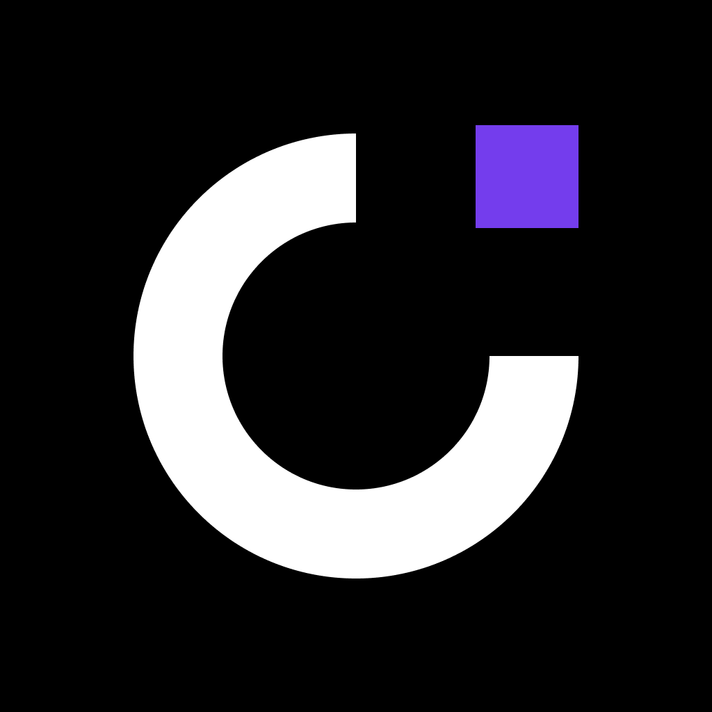
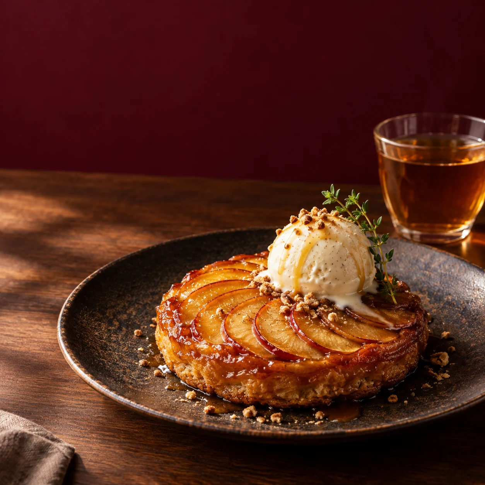
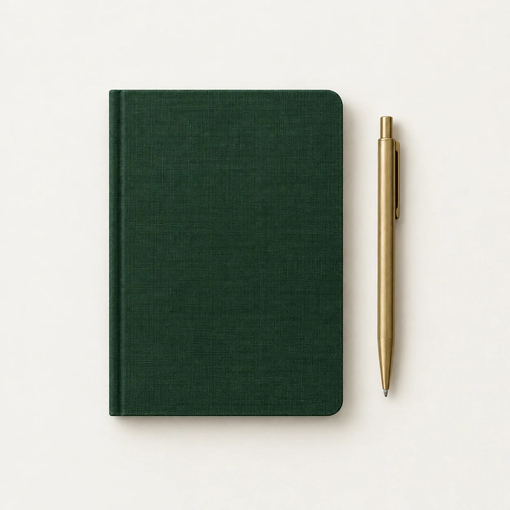
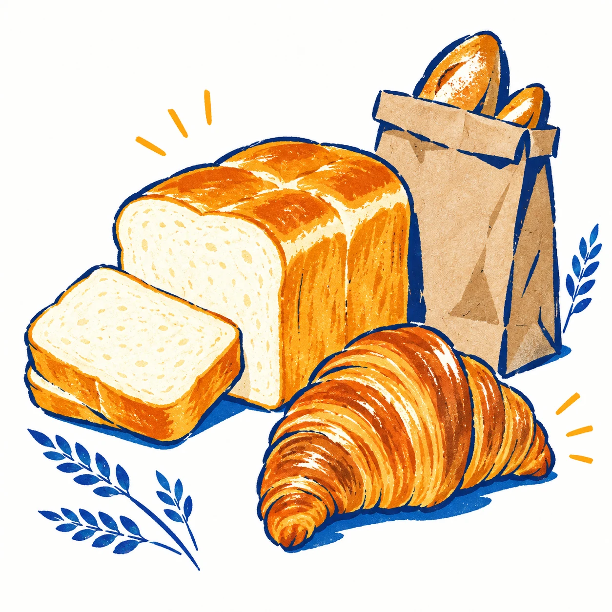
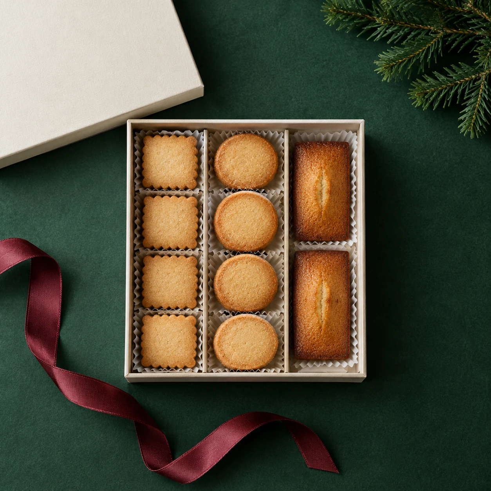
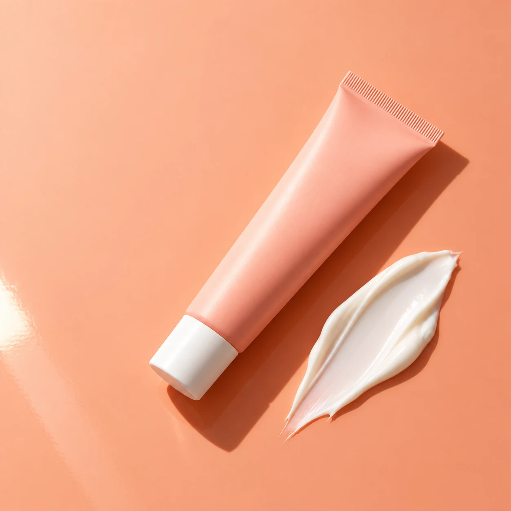
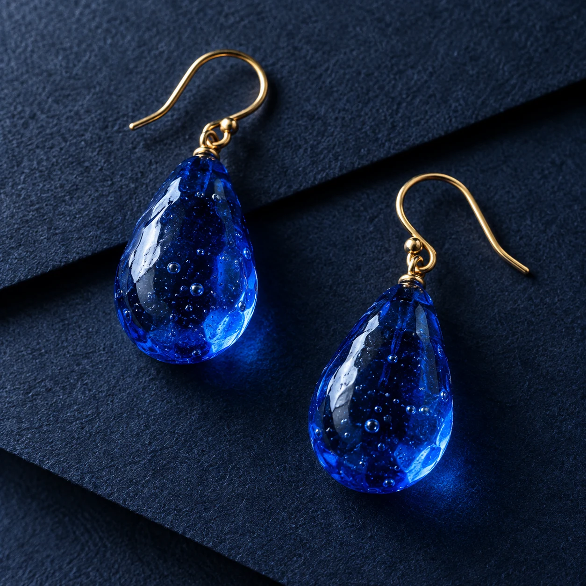

EC商品写真
毎日使いたい、道具。
おすすめの出力比率 1:1
商品のかたちを、すっきりと。
文具・雑貨のオンラインショップに。素材と細部が伝わる一枚。
入力例を見る
文具の商品写真。商品の形と素材を確認できるシンプルな背景、自然な影、全体が入る構図。文字・ロゴを追加しない。

Collart商品写真・メニュー告知・ショップのイラスト。
6つの用途から入力例を選び、日本語の指示をコピーして、Collartで作成をはじめましょう。
正式サービスは別タブで開きます。モデル・必要クレジットは作成画面で確認できます。
このページのデモは登録不要。写真は送信されません。



用途を選び、入力例をコピー。
自分の商品に合わせて編集して使えます。
6件の用途を表示
文具・雑貨のオンラインショップに。素材と細部が伝わる一枚。
文具の商品写真。商品の形と素材を確認できるシンプルな背景、自然な影、全体が入る構図。文字・ロゴを追加しない。
カフェ・ベーカリーに。メニューやSNSの告知ビジュアル。
季節のりんごタルト。料理の実際の内容・量を保ち、食感が伝わる近接写真。上部に告知文用の余白。文字は追加しない。

季節のギフト焼き菓子・ギフトショップに。年末の贈りもの特集を。
焼き菓子のギフトセット。箱を開けた俯瞰構図、包装と中身がわかる写真。深い赤のリボン、控えめな冬の演出。内容物を増やさず、文字を加えない。

新商品のキャンペーンコスメ・ケアブランドに。質感を伝えるキャンペーン画像。
無地のハンドクリームの商品キャンペーン。チューブとクリームの質感、アプリコット色の光、大胆な斜め構図。文字・効果効能の表現を追加しない。

ハンドメイドの紹介アクセサリー作家に。作品の質感と手仕事を伝える一枚。
ハンドメイドの青いガラスのイヤリング。細かな素材感と金具を見せる接写、濃紺の紙と柔らかな横光。左右一組の形と数を保ち、文字なし。
パン屋・小さなお店に。ショップカードや投稿の挿絵。
小さなパン屋の告知用イラスト。食パン、クロワッサン、紙袋を、手描きの線と明るい青・橙の色面で表現。文字、既存ブランド、既存キャラクターは描かない。
AI制作の参考作例です。入力例をコピーして正式サービスでお使いください。デモを選ぶと、このページ内で操作の流れを確認できます。実際の生成結果を保証するものではありません。
ギフトの特集に、箱と中身が伝わる写真を。
新メニューには、食感が伝わる一枚を。
お店のカードには、親しみのあるイラストを。
このデモの画像は外部ツールで作成した参考素材です。
Collartの実際の生成品質・対応設定を保証するものではありません。
最初に「何を伝える画像か」を決めると、
入力する指示も、確認するポイントも明確になります。
形や素材を見せる商品説明には、商品全体が入る構図とシンプルな背景を。白背景を指定する場合も、輪郭やラベルが変わっていないか確認します。
背景だけを変えたい場合でも、AIが商品自体を変更する可能性があります。完全な形状保持を保証する機能ではありません。
EC商品写真の入力例を見る新メニューの告知では、料理の食感と実際の盛り付けを伝えます。価格や日付を後から載せる場合は、文字用の余白を指示しましょう。
写真内の食品や数量を実際の商品と照合。告知文は画像生成後に追加すると、誤字や価格の変更を確認しやすくなります。
メニュー告知の入力例を見る販売するアクセサリーは写真を参照し、金具や素材の細部を確認。お店の世界観を伝える挿絵は、文章から作成する方法も選べます。
作品そのものを見せる写真と、イメージを伝えるイラストは用途を分けて使いましょう。
作品紹介の入力例を見る写真がある場合は、商品全体とラベルが見える画像を準備。「入力例をコピー」を押し、商品名・素材・背景を自分の商品に合わせて調整します。
「Collartで作成」から別タブの正式サービスへ。写真をアップロードし、コピーした指示を貼り付けます。イラストは文章から作成。モデル・比率・必要クレジットを確認して生成します。
形・色・ラベル・数量を実物と照合してから保存します。画像や入力内容はこのページから自動転送されません。掲載先の画像条件も確認しましょう。
きれいな画像だけでは、商品紹介は完成しません。公開前に実物と照合しましょう。
使用するモデルや設定に応じて、クレジットを消費します。
プラン・料金・利用条件を確認してからはじめましょう。
実物の商品写真を参照するなら「画像から画像」、ショップの挿絵やアイデアから作るなら「テキストから画像」を選びます。このページの各用途の「Collartで作成」から対応する正式サービスに進めます。
自動では引き継がれません。入力例をコピーしてから正式サービスを開き、貼り付けてください。商品写真も正式サービス側でアップロードします。このページは開いたまま戻れます。
掲載可否は販売先の最新の画像要件によります。白背景、文字入れ、比率、商品が占める面積などを販売先で確認し、実物と異なる表現がないか確認してから掲載してください。
AI生成で形・色・文字が変わる場合があります。元の写真と比較し、使用前に細部を確認してください。
このデモは無料の操作デモです。実サービスの試用条件や必要クレジットは生成画面で確認してください。
このデモでは画像をブラウザ内だけで表示し、サーバーには送信しません。タブを閉じると画像は保持されません。実サービスについてはプライバシーポリシー（英語）をご確認ください。
実サービスの利用規約（英語）とプランをご確認ください。このデモでは権利や商用利用の許可を付与しません。
モデル・必要クレジットは正式サービスで確認できます。